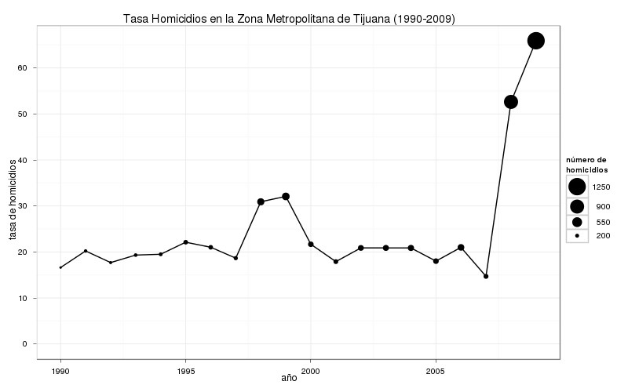
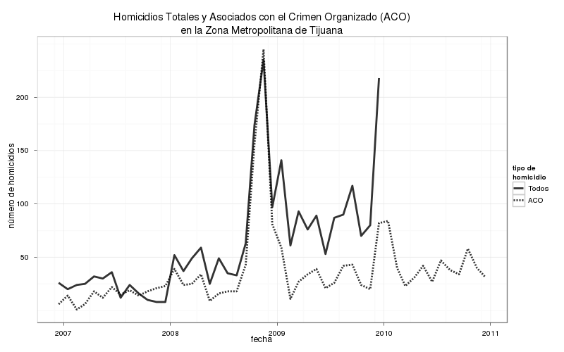
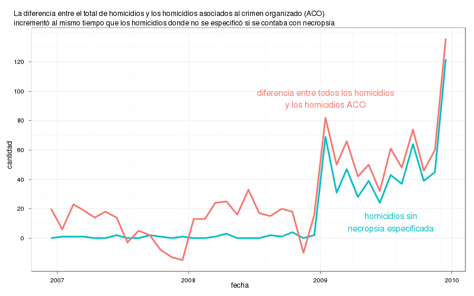
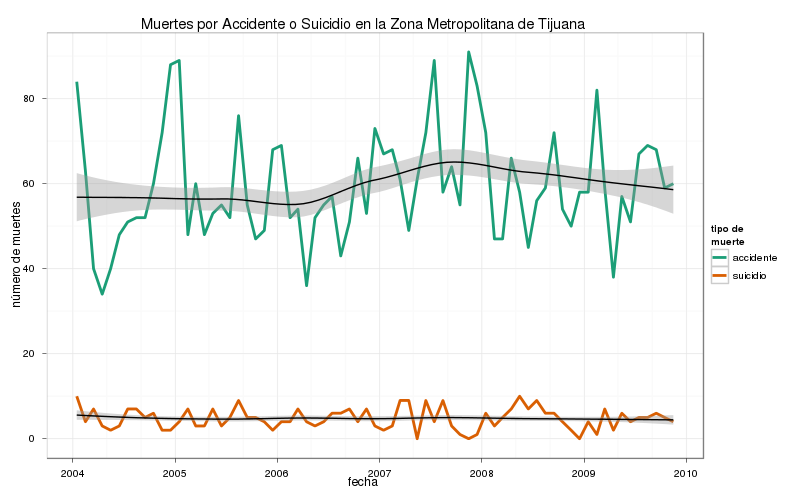

Tijuana es más violenta
La estrategia de seguridad implementada en Tijuana ha sido elogiada por muchos como el ejemplo a seguir en la lucha contra la delincuencia. El hombre al frente de la policía municipal de Tijuana, Julián Leyzaola Pérez, ha sido mencionado como el modelo que deben de seguir las fuerzas de seguridad del país debido a su supuesto éxito. El vocero de seguridad del gobierno federal, Alejandro Poiré, recientemente llegó a escribir en su blog:
[…] Tijuana es un buen ejemplo, pues la incidencia delictiva y los homicidios en contexto de presunta rivalidad delincuencial han disminuido considerablemente. 1
La mayoría de los elogios fueron debidos a una supuesta reducción de crímenes en el 2009 y el 2010 respecto al 2008. Sin embargo, una revisión de la bases de datos de mortalidad del INEGI nos muestra que Tijuana es más violenta:

Fuentes: Bases de datos de defunciones INEGI/SSA y CONAPO. Los datos del 2009 fueron ajustados para tomar en cuenta la fecha de corte del 31 de Diciembre del 2009 para registrar los certificados de defunción
Cabe recordar que la estrategias implementadas por Leyzaola tuvieron un lado oscuro que incluyeron técnicas policiacas de mano dura: presumió dispararle a los narcotraficantes en la cabeza 2, pateo el cadáver de un narcotraficante y supuestamente torturó a agentes de policía que sospechó estaban coludidos con narcotraficantes
Como se puede ver en la siguiente gráfica, mientras Tijuana ciertamente era violenta (su tasa de homicidios en la zona metropolitana era similar a la de la zona metropolitana más violenta de EU, Nueva Orleans 3), a diferencia de Acapulco y Michoacán no existía ninguna espiral de violencia por la que se pudiera justificar el iniciar un operativo conjunto y de hecho este no tuvo ningún efecto inmediato en la tasa de homicidios, a pesar de que el ejercito le confiscó sus armas a los policías y se tuvieron que armar con resorteras:

Fuente: Bases de datos de defunciones INEGI/SSA
A principios del 2008 hubo un aumento en el número de homicidios, pero no fue hasta la segunda mitad de septiembre cuando el estrepitoso aumento en la violencia empezó.
Leyzaola asumió el control de la Secretaria de Seguridad Pública del municipio de Tijuana el 10 de Diciembre de 2008, justo cuando la primera ola de la violencia llegaba a su fin. Leyzaola comenzó a aplicar sus reformas en enero del 2009, estas incluyeron una mayor cooperación con el ejército y purgas del departamento de policía.
En todo el estado de Baja California no sólo aumentaron los homicidios, sino también otros tipos de delito (datos del SNSP 4):
| Crimenes en Baja California | 2007 | 2008 | 2009 | 20105 |
|---|---|---|---|---|
| Robos con Violencia | 8,920 | 11,833 | 13,722 | 11,806 |
| Robos en Instituciones Bancarias | 13 | 52 | 98 | 41 |
| Secuestros | 20 | 115 | 103 | 79 |
| Extorsiones | 216 | 327 | 437 | 508 |
Por si fuera poco, según la ENSI-66 del ICESI, durante el 2008 en Tijuana el 76% de los delitos cayeron en la "cifra negra", es decir que no fueron reportados o no contaron con una averiguación previa para documentarlos, por lo que la cifra real de delincuencia es mucho mayor que lo que muestran las cifras oficiales. Además de que una averiguación previa puede referirse a mas de un delito
A finales de los años 90 y principios de esta década, cuando Benjamín y Ramón Arellano Félix eran los líderes del Cartel de Tijuana, este tenía una estructura más jerárquica. Sin embargo, a la par que cada hermano Arellano Félix fue capturado o dado muerte, el cartel fue perdiendo su fuerza. Para el 2007 el Cartel de Tijuana era una sombra de lo que era antes.

Cartel de Tijuana antes de la escición de "El Teo". Fuentes: Información recopilada de diarios nacionales, boletines de prensa de la PGR, blogs, narcocorridos y videos de presentaciones de criminales. 7
El principal problema en Tijuana es que uno de los principales operadores del Cartel de Tijuana se escindió y comenzó a operar con el apoyo de "El Mayo" Zambada del Cartel de Sinaloa. Según diversos artículos periodísticos Teodoro Simental, "El Teo", a pesar de que ya operaba con cierta independencia se separó en algún momento de los primeros meses de 2008 y comenzó una guerra contra los miembros restantes del Cartel de Tijuana para obtener el control de las rutas de tráfico de drogas.

Alianza con Sinaloa Fuentes: Información recopilada de diarios nacionales, boletines de prensa de la PGR, blogs, narcocorridos y videos de presentaciones de criminales.
El cartel de Sinaloa es una federación de carteles más que una organización jerárquica. Cuenta con varios jefes, el más importante es Joaquín "El Chapo" Guzmán. Otro de los jefes, "El Mayo" Zambada, fue el que respaldo a el "El Teo". Aunque según Leyzaola, "El Chapo" envió un emisario para tratar de sobornarlo. Según Leyzaola como respuesta le apunto con su arma a la cabeza del emisario de "El Chapo" y lo llevó directo al aeropuerto a tomar un avión a la Ciudad de México para llevarlo a la oficina del Procurador General de a República.
Eduardo Arellano Félix "El Doctor" fue el último de los hermanos Arellano Félix libres y fue capturado a finales de 2008. Después de la captura de Eduardo, Fernando Sánchez Arellano, "El Ingeniero", uno de los hijos de Enedina Arellano Félix, se convirtió en el líder del Cartel de Tijuana. "El Sillas" y "El Gordo Villareal", fueron los principales sicarios del Cartel de Tijuana que combatieron al "El Teo".

Después de la captura de "El Doctor" Fuentes: Información recopilada de diarios nacionales, boletines de prensa de la PGR, blogs, narcocorridos y videos de presentaciones de criminales.
"El Teo" operaba con cierta independencia del Cartel de Sinaloa al mismo tiempo que dependía de ellos para obtener sicarios, casas de seguridad para esconderse, y cargamentos de droga para cruzar a los Estados Unidos.
"El Teo" fue capturado en enero de 2010, y su sucesor, "El Muletas", poco después en febrero, sin embargo, su banda no terminó. Dos facciones distintas siguieron operando con el apoyo del Cartel de Sinaloa: "El Guicho" y "El Aquiles".

Después de la captura de "El Teo" y "El Muletas" Fuentes: Información recopilada de diarios nacionales, boletines de prensa de la PGR, blogs, narcocorridos y videos de presentaciones de criminales.
A finales de 2010, uno de los principales sicarios a cargo de la lucha contra "El Teo", "El Sillas", rompió con cartel de Tijuana y comenzó una guerra con su ex jefe y los operadores de Sinaloa en Tijuana. Este sicario secuestró a la sobrina de "El Mayo" Zambada, lo cual junto el decomiso de un cargamento de 134 toneladas de mariguana provocó una nueva ola de violencia.

Mediados del 2011. Despues de la captura de "El Güicho" y separación del "El Sillas" Fuentes: Información recopilada de diarios nacionales, boletines de prensa de la PGR, blogs, narcocorridos y videos de presentaciones de criminales.
Dado que "El Mayo" Zambada creyó que Tijuana era lo suficientemente segura para que su sobrina la visitara, es muy probable que haya llegado a un acuerdo con Fernando Sánchez después de la captura de "El Teo" para que sus embarques de drogas pudieran pasar por Tijuana sin problemas a cambio de pagarle una cuota.
Si revisamos el número diario de asesinatos podemos ver algunos patrones interesantes: La violencia se disparó a mediados de septiembre, después de que el hermano de "El Muletas" inició un motín en el cereso de Tijuana en el que 19 personas murieron (a lo largo de varios días). Después de este motín dieciséis cuerpos fueron encontrados con señales de tortura repartidos por todo Tijuana. La captura de "El Doctor" no ocurrió sino hasta finales de Octubre.

Fuente: Bases de datos de defunciones INEGI/SSA. Los homicidios de diciembre son aproximadamente 25% mayores a los registrados por la fecha de corte para registrar los homicidios.
La violencia siguió después de la captura, y luego una niña que supuestamente era la novia de Teo fue asesinada en un intento fallido de secuestro, como venganza de El Teo supuestamente mato a personas cercanas a Fernando Sánchez. Después de esto, por la manera que la violencia estaba afectando sus negocios, "El Teo" y "El Ingeniero" supuestamente llegaron a una especie de tregua. Esto coincide con la caída de los homicidios en los primeros días de diciembre y la estabilización de la violencia en un nivel increíblemente alto hasta diciembre de 2009, cuando se disparó otra vez. De acuerdo con Zeta Tijuana la violencia volvió a dispararse a finales del 2009 debido a que la Policía Federal le robo de un cargamento de metanfetaminas en el aeropuerto de Tijuana a "El Teo" y se la entregó a "El Sillas"8.
A principios de enero del 2010 "El Teo" fue capturado. El sucesor de "El Teo", "El Muletas", fue capturado en febrero. Todavía no hay datos sobre los homicidios en 2010, pero se puede consultar la base de datos de fallecimientos ocurridos por presunta rivalidad delincuencial:

Fuentes: Bases de datos de defunciones INEGI/SSA y la base de datos de fallecimientos ocurridos por presunta rivalidad delincuencial. Los homicidios de diciembre son aproximadamente 25% mayores a los registrados
Nota: El hecho de que hubo más homicidios asociados con el crimen organizado que homicidios totales durante ciertos meses no significa necesariamente que alguna de las bases de datos tenga errores dado que los datos de homicidios están ordenados por fecha de ocurrencia y puede ser que la base de datos de homicidios asociados al crimen organizado esté ordenada por fecha de registro (la base de datos de homicidios asociados al crimen organizado no está muy bien documentada).
Cuando vemos la diferencia que existe entre el total homicidios y los asociados con el crimen organizado es obvio porque el gobierno considera un éxito a Tijuana: Bajaron los homicidios asociados al crimen organizado a pesar de que desde el 2009 aumentó la diferencia entre los dos tipos de homicidios. Mientras en el 2007 y el 2008 el porcentaje de los homicidios ACO fue de 75% y 78% del total, en el 2009 fue del 36%.
Curiosamente si nos fijamos en el patrón de si se llevó a cabo una autopsia del fallecido encontramos un cambio estructural justo cuando las bases de datos empiezan a divergir, de hecho si excluimos a los homicidios donde no se especifica si se contó con autopsia, el porcentaje de los homicidios ACO sería del 73%, muy similar a los años anteriores:

Fuentes: Bases de datos de defunciones INEGI/SSA y la base de datos de fallecimientos ocurridos por presunta rivalidad delincuencial
En el estado de México, después una revisión estadística9 la policía se dio cuenta que estaba registrando muertes no criminales como homicidios y después de corregir los datos, los homicidios disminuyeron 59%. Dado lo súbita que se da la diferencia entre las series de homicidios en Tijuana es muy probable que algo parecido este pasando, pero en este caso las muertes debidas al narco no estarían siendo registradas correctamente.
El hecho de que el aumento en la diferencia entre todos los homicidios y los homicidios relacionados con el crimen organizado coincidió con el nombramiento de Leyzaola no quiere decir que es responsable dado el mismo patrón se puede ver en Mexicali. La diferencia sería para todo el estado de Baja California.
Otra hipótesis puede ser que hayan aumentado los homicidios no relacionados al crimen organizado en enero del 2009, pero dado la manera súbita en que crecen los homicidios a finales de diciembre no la considero muy probable. Una forma de probar la hipótesis sería si cuando salen las cifras de homicidios en el 2010 hay una gran descenso en el número de homicidios después de la captura de "El Teo" y/o "El Muletas".
También podemos comparar el número total de homicidios en 2008 y 2009 del INEGI con otras fuentes de homicidio:
| Región | 2008 | 2009 | 2010 | Fuente |
|---|---|---|---|---|
| Zona Metropolitana de Tijuana | 908 | ~1,250 (1,176) | S/D | INEGI/SSA |
| Municipio de Tijuana | 782 | ~1,100 (1,066) | S/D | INEGI/SSA |
| Zona Metropolitana de Tijuana | 685 | 615 | 674 | Transparencia BC10 |
| Baja California | 853 | 749 | 883 | SNSP4 |
Los datos del 2009 fueron ajustados para tomar en cuenta la fecha de corte del 31 de Diciembre del 2009 para registrar los certificados de defunción. Por ejemplo, en el 2008 ocurrieron 56 homicidios que no fueron registrados hasta el 2009. Los número entre paréntesis se refieren a los datos que están en la base de datos.
También cabe resaltar que en el resto de los estados hay una correlación muy alta entre los homicidios cometidos con arma de fuego y los homicidios relacionados con el crimen organizado lo cual no es el caso de Tijuana.
Para asegurarme de que los homicidios no hubieran sido otro tipo de muerte erróneamente clasificada revisé el resto de las muertes violentas en la base de datos del INEGI, estas se mantuvieron constante a lo largo de 2006 y 2009

Fuente: Bases de datos de defunciones INEGI/SSA. El modelo es loess
Hay grandes discrepancias entre las diferentes fuentes de datos de homicidios y razones importantes para creer que la violencia relacionada al crimen organizado no bajó en Tijuana, por lo que es de suma importancia aclarar que fue lo que pasó. Sobre todo ahora que Leyzaola ha sido nombrado jefe de la policía en Ciudad Juárez y su modelo de seguridad pública se ha empezado a exportar a otras ciudades.
Las bases de datos y el código fuente en R y ggplot pueden ser descargados de http://github.com/diegovalle/Tijuana
Pies de página:
1 Los Operativos Conjuntos, http://www.presidencia.gob.mx/blog-alejandro-poire/los-operativos-conjuntos/
2 “Siempre tiro a la cabeza”, Milenio, 2010-01-24
3 Dado que en México no existe un concepto similar al de "Ciudad" en los Estados Unidos lo más razonable es comaparar por zonas metropolitanas
4 INCIDENCIA DELICTIVA NACIONAL, FUERO COMÚN. SESNSP
5 Datos preliminares al 30 marzo de 2011
6 Estadísticas ENSI, Indicadores ENSI-6/2008 vs ENSI-5/2007, Denuncia y Cifra Negra.
7 El tamaño de los nombres corresponde a la centralidad de eigenvector que es la suma ponderada de los caminos que se originan en un nodo y puede ser interpretada como una medida de influencia dentro del cartel. El Layout es Force Atlas. Los colores corresponden a las comunidades encontradas por el siguiente algoritmo: Vincent D Blondel, Jean-Loup Guillaume, Renaud Lambiotte, Etienne Lefebvre, Fast unfolding of communities in large networks, in Journal of Statistical Mechanics: Theory and Experiment 2008 (10), P1000
8 Federales trafican droga http://www.zetatijuana.com/html/Edicion1916/Principal.html
9 Campaigning against crime, http://www.economist.com/node/18744547, May 26th 2011
10 Estadísticas de Procuración de Justicia, Portal de Transparencia de Baja California
Org version 7.5 with Emacs version 23
Validate XHTML 1.0